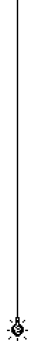
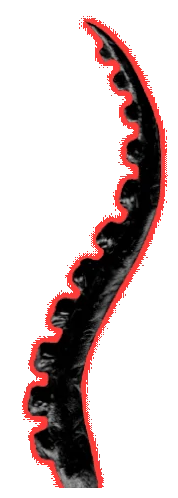
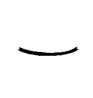

<div class="flex justify-center items-center w-full overflow-hidden relative" [ngClass]="(appTheme$ | async).theme === 'scary' ? 'scary-background' : 'background'">
    <div class="flex flex-col justify-center items-center"
    [ngClass]="isBelowLg && isBelowMd ? 'w-full mt-4' : isBelowLg ? 'w-[90%] mt-12' : 'w-[67%] mt-12'">
        <logo #logo class="relative" (emitScaryBgChange)="changeToScary()" [@logoAnimation]="isReloading ? false : true" [ngClass]="isBelowMd ? 'mb-4' : 'mb-14'"></logo>
        <div class="relative w-full" [@contentAnimation]="isReloading ? false : true">
            <div class="h-6"></div>
            <navbar class="w-full absolute top-1 z-[2]"></navbar>
            <div class="border-2 border-black w-full p-1 background">
                <div class="bg-black h-full text-white overflow-y-scroll text-lg relative scrollbar-hidden scroll-bottom min-h-[50rem]" [@routerAnimation]="getRouteAnimationData()"
                [ngClass]="isBelowLg && isBelowMd ? 'px-8 pt-14 pb-8' : isBelowLg ? 'px-12 pt-20 pb-10' : 'px-20 pt-24 pb-12'">
                    <router-outlet></router-outlet>
                </div>
            </div>
        </div>
        <footer class="mt-10 mb-10 z-[2]"></footer>
    </div>

    <div class="">
        
        
        
        
    
        
        
        
        
    </div>

    <div class="fixed border-2 bottom-[-2px] border-black z-10 bg-white pr-1 pl-1 pt-1" 
    [@adAnimation]="isReloading ? false : true" *ngIf="showAd && !isReloading" [ngClass]="isBelowLg ? 'w-full h-[18rem]' : 'w-[60rem] h-[18rem]'">
        <div class="flex flex-col bg-black w-full h-full ad-image relative"
            [ngClass]="isSharkAd ? 'shark' : 'szlam'">
            <button class="absolute w-5 h-5 border-t-2 border-2 border-black text-2xl p-[1px] bg-white top-[-6px] right-[-6px]" (click)="hideAd()">
                <svg xmlns="http://www.w3.org/2000/svg" width="16" height="16" fill="black" class="bi bi-x" viewBox="0 0 16 16"> <path d="M4.646 4.646a.5.5 0 0 1 .708 0L8 7.293l2.646-2.647a.5.5 0 0 1 .708.708L8.707 8l2.647 2.646a.5.5 0 0 1-.708.708L8 8.707l-2.646 2.647a.5.5 0 0 1-.708-.708L7.293 8 4.646 5.354a.5.5 0 0 1 0-.708z"/> </svg> 
            </button>
            <div class="w-full mt-auto text-white text-shadow p-4 text-center">
                <p class="text-[2.5rem] leading-[2rem]">{{ adText }} <a href="https://discord.gg/8JTc36HNyM" class="underline text-red-500 bg-transparent">ZOBACZ ZDJĘCIA!!!</a></p>
            </div>
        </div>
    </div>

    <div class="fixed w-14 h-20 border-2 border-black p-1 z-20 left-[6px] bottom-44 bg-white" [@scrollAnimation]="scrolledPast ? 'open' : 'closed'">
        <div class="w-full h-full bg-black cursor-pointer flex justify-center items-center" (click)="scrollToTop()">
            
        </div>
    </div>
</div>

<div class="fixed w-full h-full modal-window top-0 left-0 z-30 flex items-center justify-center scary-modal-background" *ngIf="showScaryModal">
    
</div>
